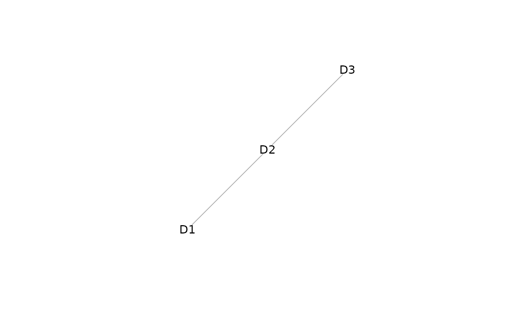

Performs naive imputation of values from the list of mosaic data and joint embedding from StabMap.
Arguments
- assay_list
List of mosaic data from which to perform imputation.
- embedding
Joint embedding from which to extract nearest neighbour relationships.
- reference
Character vector of cell names to treat as reference cells.
- query
Character vector of cell names to treat as query cells.
- neighbours
Number of nearest neighbours to consider (default 5).
- fun
function (default `mean`) to aggregate nearest neighbours' imputed values.
Value
List containing imputed values from each assay_list data matrix which contains reference cells.
Examples
set.seed(2021)
assay_list <- mockMosaicData()
lapply(assay_list, dim)
#> $D1
#> [1] 150 50
#>
#> $D2
#> [1] 150 50
#>
#> $D3
#> [1] 150 50
#>
# stabMap
out <- stabMap(assay_list,
ncomponentsReference = 20,
ncomponentsSubset = 20
)
#> treating "D1" as reference
#> generating embedding for path with reference "D1": "D1"
#> generating embedding for path with reference "D1": "D2" -> "D1"
#> generating embedding for path with reference "D1": "D3" -> "D2" -> "D1"
#> treating "D2" as reference
#> generating embedding for path with reference "D2": "D2"
#> generating embedding for path with reference "D2": "D1" -> "D2"
#> generating embedding for path with reference "D2": "D3" -> "D2"
#> treating "D3" as reference
#> generating embedding for path with reference "D3": "D3"
#> generating embedding for path with reference "D3": "D2" -> "D3"
#> generating embedding for path with reference "D3": "D1" -> "D2" -> "D3"

# impute values
imp <- imputeEmbedding(assay_list, out)
# inspect the imputed values
lapply(imp, dim)
#> $D1
#> [1] 150 150
#>
#> $D2
#> [1] 150 150
#>
#> $D3
#> [1] 150 150
#>
imp[[1]][1:5, 1:5]
#> D1_cell_1 D1_cell_2 D1_cell_3 D1_cell_4 D1_cell_5
#> gene_1 0.50687450 -0.77149007 -0.2982274 -0.72078317 -0.12148316
#> gene_2 0.05829149 -0.05286518 -0.1375450 0.02383978 -0.35894336
#> gene_3 1.21645830 0.05262619 0.7272864 0.18519759 0.60755035
#> gene_4 -0.49139466 0.23012490 0.1569971 -0.12349555 -0.00984099
#> gene_5 -0.04233858 -0.33526072 -0.2985623 -0.43112877 -0.13828083